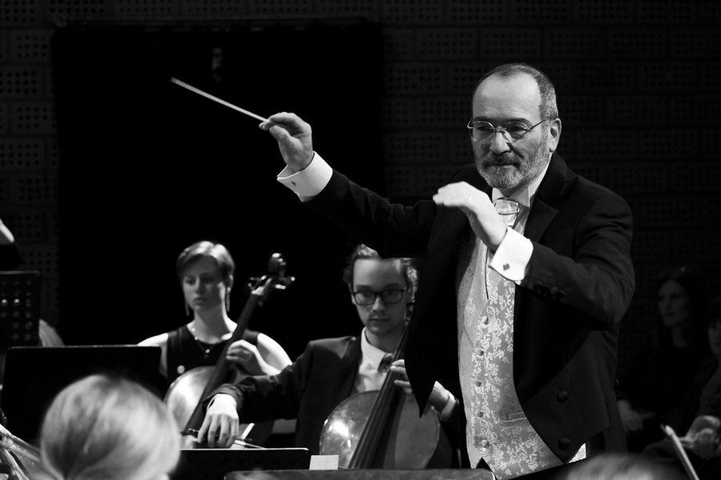

Graziano Sanvito je dirigent a umělecký vedoucí Symfonického orchestru Liberec a zároveň také jeho spoluzakladatel. Jak se můžete dočíst z podrobného životopisu níže, Graziano je opravdu kosmopolitní člověk a my máme velké štěstí, že se nakonec usadil právě tady, v Liberci.
Stručný životopis:
Absolvoval konzervatoř G. Nicolini v Piacenze (Itálie), obor klarinet (1988), konzervatoř M. Feliu v Benicarló (Španělsko), obor tuba (2002), a konzervatoř v Teplicích, obor dirigování (2006).
V letech 1989 až 1998 byla jeho hlavní náplní vedle dirigování hra na klarinet.
Působil v RAI (italský rozhlas a televize) v Miláně a jako hráč na basový klarinet a na basetový roh v Turíně.
Vyučoval hru na basový klarinet, basetový roh a jako hostující hráč působil v symfonických orchestrech na federální univerzitě v São Paulo (Brazílie), na univerzitě de Nuevo León v Monterrey (Mexiko) a v národní konzervatoři v Guatemale.
Od roku 1998 se věnuje dirigování a pedagogické činnosti.
V letech 2002—2003 působil na Pontifikální univerzitě Jana Pavla II. (Vatikán/Řím) jako hostující profesor. Vedl zde kurz dějin a vývoje hudebního jazyka.
Od roku 2004 je členem orchestru Divadla F. X. Šaldy.
Působil v ZUŠ Liberec a nyní působí v ZUŠ v Hrádku nad Nisou jako pedagog klarinetu, saxofonu, tuby a orchestrální hry.
Od roku 2012 do roku 2020 dirigoval Podkrkonošský symfonický orchestr.
Od roku 2023 je dirigentem Symfonického orchestru Liberec.